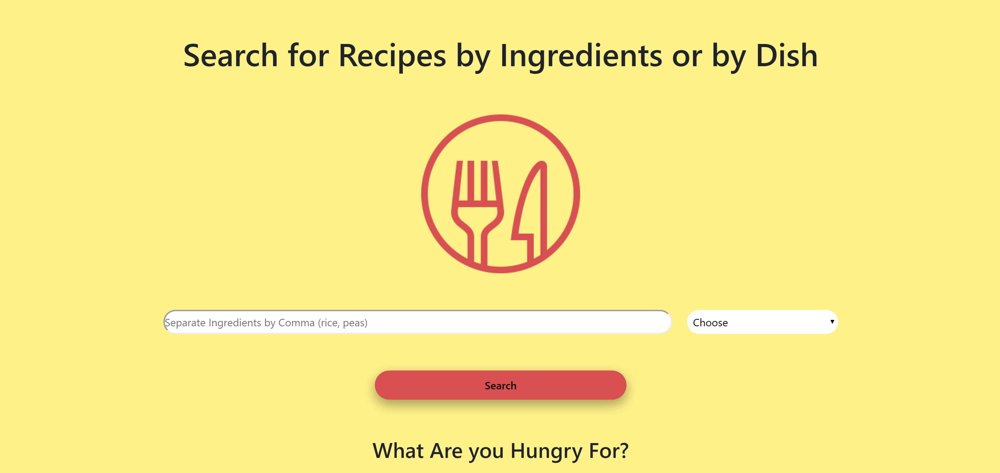

Home
Home Contact
Contact
A JavaScript App to Search Recipes
A mobile-friendly, accessible web app to search recipes that is dynamically created with JavaScript
Project Overview
Challenge:
Create a mobile-friendly, accessible app using Bootstrap to search recipes from an API based on ingredients or dish with minimal HTML. The content being created by JavaScript.
Team:
Myself
The Process
What is the Goal?
The goal for this project was to make a web app that is able to search recipes by ingredients or dish. The idea for this was born when I decided I wanted to start cooking different things to eat but was tired of trying to decide what to make. This app would make it easy to find recipes based on what I wanted to eat ot what I had in the fridge.
Necessities:
- Dynamically Created
- Content Created by JavaScript
- Mobile Friendly
- Accessible
- User Friendly
- Easy to Navigate
Dynamically Created Content with JavaScript
When the idea for this project first came up I thought it would be interesting to see how a site almost entirely created by JavaScript would turn out. I knew this wasn't the most efficient way to create a site but I was still curious. I figured this would be a good experiment and a way to practice some JavaScript skills. What I noticed was that creating a site through JavaScript can become tedious. For this it was important to create functions to handle a bulk of the work and reduce the amount of code. In the end the web app turned out great and it really helped me solidify my understanding of JavaScript and how it interacts with the DOM.
What I Learned
- Color can play a huge role in how the user experiences a product. This is why the color scheme of the app focuses on yellow and red. These colors make people think of food and hunger (McDonald's, Wendy's, In-n-Out).
- Creating a site completely from JavaScript I was able to really cement my skills in using JavaScript to interact with the DOM. This is incredibly useful and can be used to crate web pages that interact with the user in a new way.
- Designing for mobile in mind is important. More and more people are accessing sites mobiles and as this trend continues the mobile versions of sites become the focus of development. I experienced this first hand when I wanted to use my web app from my phone while I was cooking. Having a dedicated, user-friendly version made searching recipes so much easier.


Deliverables

 Github
Github
Search Recipes App
Site Design and Build by Colton Almaraz